МИНИСТЕРСТВО ТРАНСПОРТНОГО СТРОИТЕЛЬСТВА
ТЕХНИЧЕСКИЕ УКАЗАНИЯ
ПО УСТРОЙСТВУ ДОРОЖНЫХ ОСНОВАНИЙ
ИЗ ОБЛОМОЧНЫХ МАТЕРИАЛОВ,
УКРЕПЛЕННЫХ ЦЕМЕНТОМ
ВСН 164-69
минтрансстрой
Утверждены Техническим управлением Министерства
транспортного строительства 31 декабря 1969 г.
приказом № 60
ОРГТРАНССТРОЙ
МОСКВА 1970
«Технические указания по устройству дорожных оснований из обломочных материалов, укрепленных цементом» разработаны Ленинградским филиалом Союздорнии на основе результатов исследований и опытных работ Союздорнии, Белдорнии, Госавтодорнии, СибАДИ и др., а также обобщения производственного опыта строительства дорожных оснований и покрытий из обломочных материалов, укрепленных цементом. В части использования обломочных материалов, укрепленных цементом, настоящие «Технические указания» дополняют «Указания по применению в дорожном и аэродромном строительстве грунтов, укрепленных вяжущими материалами» (СН 25-64).
В «Технических указаниях» даны также рекомендации по укреплению песчаных материалов цементом в условиях пониженных положительных и отрицательных температур воздуха.
«Технические указания» составил инж. А.П. Кузнецов под общим руководством докт. техн. наук проф. А.В. Саталкина.
Замечания и предложения по настоящим «Техническим указаниям» просьба направлять по адресу: Московская область, Балашиха-6, Союздорнии или Ленинград, Д-65, ул. Герцена, 19, Ленинградский филиал Союздорнии.
|
Министерство транспортного строительства |
Ведомственные строительные нормы |
ВСН 164-69 |
|
Технические указания по устройству дорожных оснований из обломочных материалов, укрепленных цементом |
Министерство транспортного строительства |
1.1. Настоящие «Технические указания» дополняют и развивают отдельные положения СНиП II-Д.5-62 и «Указаний по применению в дорожном и аэродромном строительстве грунтов, укрепленных вяжущими материалами» СН 25-64.
1.2. Под обломочными материалами следует понимать крупнообломочные и песчаные грунты, классифицируемые в табл. 13 СНиП II-Д.5-62 или табл. 3 «Инструкции по сооружению земляного полотна автомобильных дорог» ВСН 97-63.
1.3. В «Технических указаниях» даны рекомендации по устройству дорожных оснований и облегченных покрытий (со слоем износа) из крупнообломочных материалов, укрепленных цементом, при положительных и отрицательных температурах воздуха.
Кроме того, в «Технических указаниях» даны рекомендации по применению песчаных материалов для устройства дорожных оснований при пониженных положительных и отрицательных температурах воздуха (от +5 до -10 °С).
Устройство оснований (покрытий) из обломочных материалов, укрепленных цементом, при пониженных положительных и отрицательных температурах воздуха на земляном полотне, возведенном в зимних условиях, не разрешается.
При устройстве дорожных оснований и облегченных покрытий из песков различной крупности, укрепленных цементом, в летних условиях следует руководствоваться «Указаниями» СН 25-64.
|
Внесены Государственным всесоюзным дорожным научно-исследовательским институтом (Союздорнии) |
Утверждены Техническим управлением Министерства
транспортного строительства приказом № 60 |
Срок введения в действие - |
1.5. Основания из обломочных материалов, укрепленных цементом, рекомендуется устраивать под капитальные (цементнобетонные, асфальтобетонные), облегченные покрытия на автомобильных дорогах, аэродромах, городских улицах и площадях, а также на внутризаводских и лесовозных дорогах.
1.6. Основания и облегченные покрытия из укрепленных цементом крупнообломочных и песчаных материалов устраивают во II - V дорожно-климатических зонах на земляном полотне в соответствии с требованиями СНиП II-Д.5-62 и «Инструкции» ВСН 97-63.
При этом учитывают, что в V зоне основания и покрытия такого вида можно устраивать круглогодично в соответствии с пп. 2.22 и 3.2 - 3.4 настоящих «Технических указаний».
1.7. При строительстве дорожных оснований (покрытий) в IV - V дорожно-климатических зонах в жаркую и ветреную погоду при относительной влажности воздуха менее 40 % для создания нормальных условий протекания процессов гидратации цемента оптимальную влажность цементногрунтовой смеси следует увеличивать на 2 - 3 %. Поверхность готового укрепленного цементом основания (покрытия) сразу же закрывают пленкообразующим материалом, а после формирования засыпают песком слоем 5 см.
Для уменьшения испарения воды из смеси в жаркую погоду, улучшения взаимосвязи между цементогрунтом и покрытием, а также для увеличения деформативных свойств цементогрунта из обломочных материалов добавляют битумную эмульсию (на древесной смоле) в количестве 1 - 2 % от веса смеси (50 %-ной концентрации).
Эмульсию добавляют с помощью автогудронатора в период окончательного увлажнения и перемешивания смеси.
Применение добавки эмульсии должно быть обосновано технико-экономическим расчетом.
1.8. Пригодность обломочных материалов для укрепления цементом устанавливают в соответствии с пп. 2.3 - 2.15 настоящих «Технических указаний» на основании подбора состава смеси и по результатам лабораторных испытаний образцов.
При этом отдается предпочтение способу приготовления смеси в стационарных смесительных установках (С-780, Д-709, С-543). Способ смешения на дороге крупнообломочных материалов с цементом допускается в условиях положительных температур воздуха при устройстве нижних слоев основания на дорогах I - IV категорий и верхних слоев на дорогах IV - V категорий.
1.10. При больших объемах работ по устройству оснований (покрытий) из обломочных материалов, укрепленных цементом, и дальности возки цемента более 30 км необходимо создавать полустационарные автоматизированные цементные склады (типа С-753, С-894).
1.11. Целесообразность устройства оснований (покрытий) из обломочных материалов, укрепленных цементом, определяют на основании технико-экономических расчетов различных сопоставимых по прочности вариантов дорожных одежд.
1. Конструкции
2.1. Основания из крупнообломочных и песчаных материалов, укрепленных цементом, устраивают однослойными и двухслойными в зависимости от требований к их прочности.
Толщина однослойного основания должна быть не более 22 см, а толщина каждого слоя двухслойного основания - не менее 8 см в плотном теле.
На покрытиях облегченного типа из этих материалов следует устраивать защитный слой износа (п. 1.4).
2.2. Толщину цементногрунтового основания рассчитывают в соответствии с «Инструкцией по назначению конструкций дорожных одежд нежесткого типа» ВСН 46-60 и модулем деформаций (табл. 1).
За расчетные принимают нагрузки, нормированные ГОСТ 9314-59.
В конструктивных слоях дорожной одежды и подстилающем слое следует проверять растягивающие напряжения и напряжения сдвигу в соответствии с «Методическими указаниями по проектированию и расчету дорожных одежд нежесткого типа с усовершенствованными покрытиями» (М., Оргтрансстрой, 1965).
Таблица 1
Физико-механические свойства цементогрунта
|
Классы прочности |
||||
|
1 |
2 |
3 |
4 |
|
|
Предел прочности при сжатии водонасыщенных образцов в возрасте 28 суток, кГ/см2, не менее |
40 |
30 |
20 |
10 |
|
Сопротивление растяжению при изгибе водонасыщенных образцов-балочек в возрасте 28 суток, кГ/см2, не менее |
10 |
8 |
6 |
3 |
|
Влажность смеси при окончательном перемешивании и уплотнении |
Не должна превышать оптимальную более чем на 2 % |
|||
|
Прочность образцов при сжатии после испытания на морозостойкость, кГ/см2, не менее |
30 |
20 |
15 |
5 |
|
Расчетный модуль деформации, кГ/см2, не менее |
2200 |
1600 |
1200 |
600 |
Примечания. 1. Контрольное определение модуля деформации цементогрунта производят по методике, изложенной в приложении 1, п. 5.
2. Для I класса прочности предел прочности при сжатии в возрасте 28 суток должен быть не более 60 кГ/см2.
При устройстве дренирующего слоя толщину его рассчитывают по «Методическим указаниям по проектированию морозозащитных и дренирующих слоев в основании проезжей части автомобильных дорог» (М., Оргтрансстрой, 1965).
Расчетное значение сопротивления растяжению при изгибе Rи.p для крупнообломочных и песчаных материалов, укрепленных цементом, определяют по формуле
Rи.р = Rи · Kд · Kв · Kн, (1)
где Rи - сопротивление растяжению при изгибе (табл. 2), полученное испытанием балочек или вычисленное по формулам (2) и (3);
Kд - коэффициент запаса прочности на повторность нагрузки, равный в среднем 0,4;
Kв - коэффициент, характеризующий условия увлажнения местности, принимается от 0,7 до 1; меньшие значения - для конструктивных слоев дорожной одежды, устраиваемых во II - III дорожно-климатических зонах при 2 и 3 типах местности по условиям увлажнения и земляном полотне из слабофильтрующих грунтов; большие значения - для IV - V дорожно-климатических зон при 1 типе местности;
Kн - коэффициент однородности материала, получаемого в производственных условиях, принимают от 0,6 до 0,8; меньшие значения - для обломочных и песчаных материалов, укрепленных цементом, при смешении на дороге; большие значения - при смешении материалов в установке.
Расчетное значение сопротивления растяжению при изгибе принимают для конструктивных слоев дорожной одежды, устраиваемых во II - III дорожно-климатических зонах при интенсивном увлажнении (2 и 3 типы местности) и земляном полотне из слабофильтрующих грунтов, в пределах 1 - 2 кГ/см2; для конструктивных слоев дорожной одежды, устраиваемых в IV - V дорожно-климатических зонах и 1 типе местности по условиям увлажнения, - в пределах 2 - 3 кГ/см2.
Расчетное сопротивление при изгибе для обломочных материалов, укрепленных цементом, должно быть не более 4 - 5 кГ/см2 во избежание образования большого количества трещин на дорожной одежде.
Расчетные значения величин модулей упругости при назначении конструкций дорожных одежд в зависимости от расхода цемента и вида материала принимают по табл. 2.
Таблица 2
Расчетные значения модулей упругости обломочных материалов, укрепленных портландцементом
|
Расход цемента, % по весу смеси |
|||||
|
4 |
6 |
8 |
10 |
12 |
|
|
Модуль упругости Е, кГ/см2 |
|||||
|
Крупнообломочные (щебенистые и дресвяные) оптимального зернового состава с коэффициентом сбега 0,7 |
4000 - 5500 |
6000 - 6500 |
6500 - 8000 |
- |
- |
|
Крупнообломочные с содержанием пылевато-глинистых фракций от 10 до 20 % |
3000 - 4000 |
4500 - 5000 |
5500 - 6500 |
- |
- |
|
Песок гравелистый крупный и средней крупности оптимального зернового состава |
2500 - 3000 |
3500 - 4000 |
4500 - 5000 |
5500 - 6500 |
- |
|
Песок мелкий пылеватый оптимального зернового состава |
- |
2500 - 3000 |
3500 - 4000 |
4500 - 6000 |
- |
|
Песок одномерной различной крупности |
- |
2500 - 3000 |
3500 - 4000 |
4500 - 5000 |
5500 - 6500 |
Примечания. 1. Меньшие значения величин модуля упругости принимают для материалов, имеющих прочность на износ ниже 3 класса, большие значения модуля упругости - для материалов, относящихся по износу к 1 - 3 классам прочности.
2. Меньшие величины Еу принимают для нижних слоев оснований в суровых климатических условиях при земляном полотне из слабофильтрующих грунтов, большие значения Eу - для оснований в умеренных и мягких климатических условиях при благоприятных условиях увлажнения земляного полотна.
3. При перемешивании крупнообломочных материалов с цементом на дороге значения модулей упругости понижают на 30 %.
4. Модули упругости и деформации для обломочных материалов, укрепленных цементом, следует определять в условиях свободного бокового расширения. При этом их величина, получаемая на лабораторных образцах, должна быть в 1,5 раза выше расчетной, принятой по табл. 1 и 2. Образцы следует испытывать по методу, изложенному в приложении 1, п. 5.
Крупнообломочные
2.4. Известняки с мергелистостью до 30 % можно использовать, если составленные из них смеси по прочности и морозостойкости удовлетворяют требованиям табл. 1 и п. 3.3 настоящих «Технических указаний».
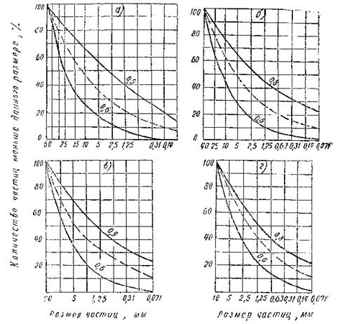
Кривые зерновых составов крупнообломочных смесей:
а - крупнозернистой; б - среднезернистой; в - мелкозернистой; г - очень мелкозернистой смеси (гравелистый песок). Границы оптимального состава обозначены сплошными линиями; наилучшая смесь - пунктирными линиями
2.5. При несоответствии зернового состава обрабатываемого материала оптимальному (см. рис.) состав подбирают отгрохоткой или добавлением недостающих фракций. Разрешается использовать крупнообломочные материалы без подбора зернового состава, если они при оптимальной влажности в результате стандартного уплотнения или на прессе под давлением 150 кГ/см2 имеют объемный вес скелета не менее 2 г/см3.
Допускается укреплять цементом крупнообломочные материалы прерывистого зернового состава, не выходящие за пределы стандартных кривых, указанных на рисунке.
2.6. В крупнообломочных материалах, укладываемых в основание или покрытие, должно быть не более 10 % фракций размером 50 - 70 мм и не менее 15 % фракций мельче 5 мм.
Содержащиеся в крупнообломочных материалах фракции размером более 70 мм удаляют предварительной отгрохоткой.
Содержание фракций размером от 2,5 до 25 мм в смесях оптимального зернового состава с максимальным размером частиц до 25 мм допускается в количестве не более 80 % по весу.
В крупнообломочных материалах оптимального состава содержание пылевато-глинистых примесей не должно превышать 20 %, в том числе комьев глины размером более 5 мм - не более 5 %.
2.7. В технико-экономическом отношении наилучшие смеси из крупнообломочных материалов - смеси непрерывного зернового состава с коэффициентом сбега 0,7 и максимальной крупностью частиц до 40 мм.
2.8. Крупнообломочные материалы, имеющие показатели по износу и дробимости выше указанных в табл. 3 на 20 %, могут быть использованы при строительстве дорожных оснований, если составленные из них смеси по прочности и морозостойкости удовлетворяют требованиям табл. 1 и п. 3.3 настоящих «Технических указаний». Число пластичности для частиц менее 0,63 мм не должно быть более 12.
Таблица 3
Требования к каменным материалам крупнообломочных смесей
|
Щебень из горных пород |
Гравий |
|||
|
изверженных |
метаморфических |
осадочных (доломиты, известняки и песчаники) |
||
|
Износ в полочном барабане, % от веса, не более |
45 |
55 |
60 |
55 |
|
Дробимость, %, не более (сухое состояние) |
25 |
34 |
35 |
16 |
2.9. Крупнообломочные материалы кислых горных пород, а также смеси, влажность которых превышает оптимальную на 50 - 70 %, не рекомендуется укреплять добавками извести. В этом случае для уменьшения влажности смеси и нейтрализации кислотности целесообразно увеличить расход цемента на 30 - 40 % против норм (пп. 2.22 и 4.1), так как добавка извести даже в количестве 2 % значительно понижает морозостойкость и прочность обломочных материалов, укрепленных цементом.
Песчаные
2.10. Для устройства дорожных оснований и облегченных покрытий (со слоем износа) при температуре от +5 до -10 °С пригодны пески, укрепленные цементом, в виде естественных смесей различной крупности (табл. 13 СНиП II-Д.5-62): гравелистые, крупные, средней крупности, мелкие и пылеватые, а также искусственные пески, полученные от дробления горных пород. Можно применять чистые одномерные пески различной крупности, если составленные из них цементнопесчаные смеси удовлетворяют требованиям табл. 1 и 2 настоящих «Технических указаний».
2.11. Для снижения расхода портландцемента и получения более качественного цементогрунта необходимо, чтобы песчаные материалы по зерновому составу были близки к оптимальным смесям (табл. 4 и см. рисунок).
Таблица 4
Рекомендуемые составы песчаных материалов для устройства оснований (покрытий), укрепленных цементом
|
Количество частиц, %, проходящих сквозь сито с отверстиями, мм |
||||||||
|
10 |
5 |
2,5 |
1,25 |
0,63 |
0,315 |
0,14 |
0,071 |
|
|
1 |
100 |
60 - 80 |
30 - 60 |
20 - 45 |
10 - 35 |
5 - 30 |
4 - 25 |
2 - 20 |
|
2 |
- |
100 |
50 - 75 |
30 - 60 |
20 - 50 |
10 - 40 |
8 - 30 |
3 - 20 |
|
3 |
- |
- |
100 |
60 - 80 |
45 - 60 |
20 - 40 |
15 - 35 |
5 - 20 |
|
4 |
- |
- |
- |
100 |
60 - 80 |
35 - 55 |
25 - 45 |
10 - 20 |
Если пески не удовлетворяют этому требованию, рекомендуется перед смешением с цементом вносить в них гранулометрические добавки. В качестве добавок могут быть использованы: супесчаные, пылеватые и суглинистые грунты, отходы камнедробления, золы уноса, гранулированные или самораспадающиеся шлаки.
Общее содержание пылеватых частиц в песчаных материалах не должно превышать 20 % от веса смеси, в том числе комьев глины размером более 5 мм должно быть не более 5 %.
Допускается использовать пески различного состава (в том числе и одномерные) без подбора по зерновому составу, если они при оптимальной влажности в результате стандартного уплотнения или уплотнения на прессе давлением 150 кГ/см2 имеют объемный вес скелета не менее 1,8 г/см3.
2.12. Пески из кислых горных пород рекомендуется укреплять отходами дробления карбонатных пород. При этом расход цемента следует снизить против норм на 20 - 30 % (пп. 2.22 и 4.1).
2.13. Из песков, загрязненных органическими примесями (колориметрическая проба темнее эталона по ГОСТ 8735-65), устраивать дорожные основания (покрытия) в условиях пониженных положительных и отрицательных температур воздуха запрещается.
2.14. Пески, укрепляемые цементом при пониженных положительных и отрицательных температурах воздуха, не должны содержать мерзлых комьев снега и льда.
Цемент
2.15. Для укрепления крупнообломочных и песчаных материалов во II - III дорожно-климатических зонах рекомендуется применять портландцемент марки 400 и выше (ГОСТ 10178-62).
При устройстве дорожных оснований и облегченных покрытий в IV - V дорожно-климатических зонах крупнообломочные и песчаные материалы допускается укреплять портландцементом марки 300 и выше, а также и другими цементами (шлакопортландцементом, пуццолановым портландцементом) при соблюдении требований табл. 1. Для нижних слоев оснований применяют цемент не ниже марки 200.
Для строительства при пониженных положительных и отрицательных температурах воздуха не допускается применять цемент с содержанием трехкальциевого алюмината более 10 %.
Вода
2.16. При укреплении обломочных материалов цементом и для ухода за готовым основанием (покрытием) применяют воду, пригодную для питья.
Не допускается применять промышленные, сточные и болотные воды.
Воду, загрязненную органическими примесями, можно использовать после обработки ее негашеной известью. Количество извести назначают в зависимости от величины водородного показателя. Пригодна вода, имеющая pH не менее 4.
Хлористые соли и известь
2.17. Хлористые соли NaCl, CaCl2 применяют при укреплении обломочных песчаных материалов цементом в условиях пониженных положительных и отрицательных температур (от +5 до 0 °С и от 0 до -10 °С) в качестве добавки для снижения температуры замерзания воды и создания необходимых условий нормального твердения цемента. При этом хлористые соли должны удовлетворять следующим ГОСТам:
кальций хлористый технический (безводный) - ТУ 1129-44;
кальций хлористый технический (плавленый) - ГОСТ 450-58;
кальций хлористый (жидкий) - ГОСТ 10932-64;
натрий хлористый технический (поваренная соль) - ТУ 1320-46;
натрий хлористый - ГОСТ 153-57, соль поваренная СТУ 43-717-65.
2.18. Известь CaO должна удовлетворять требованиям ГОСТ 9179-59. Известь негашеную применяют в качестве добавки, повышающей pH воды, загрязненной органическими примесями.
2.19. Хлористые соли и известь необходимо хранить в закрытых помещениях или под навесом.
2.20. Растворы хлористых солей приготовляют с учетом температуры их замерзания (табл. 5). Следует выбирать такие концентрации водных растворов хлористых солей, которые не замерзали бы при максимальной отрицательной температуре воздуха во время устройства основания или покрытия.
Таблица 5
Температура замерзания солевых растворов в зависимости от удельного веса
|
Температура замерзания раствора, град |
Содержание безводных солей, кГ |
|||||
|
в 1 л раствора |
на 1 л воды |
|||||
|
СаСl2 |
NaCl |
СаСl2 |
NaCl |
СаСl2 |
NaCl |
|
|
1,01 |
-0,6 |
-0,9 |
0,013 |
0,015 |
0,013 |
0,015 |
|
1,06 |
-3,7 |
-5,4 |
0,075 |
0,088 |
0,076 |
0,090 |
|
1,08 |
-5,2 |
-7,5 |
0,102 |
0,119 |
0,104 |
0,123 |
|
1,10 |
-7,1 |
-9,8 |
0,125 |
0,149 |
0,130 |
0,157 |
|
1,13 |
-10,2 |
-13,5 |
0,165 |
0,198 |
0,175 |
0,212 |
|
1,14 |
-11,4 |
-15,1 |
0,180 |
0,214 |
0,188 |
0,231 |
|
1,17 |
-15,7 |
-21,2 |
0,221 |
0,263 |
0,233 |
0,301 |
Примечание. Допускается применять в качестве добавок отходы солей калийного и содо-цементного производства, если в их составе не содержится агрессивных по отношению к цементу соединений.
2.21. Хлористые соли добавляют в обломочные материалы в следующих случаях:
а) при устройстве из них оснований, укрепляемых цементом, в условиях пониженных положительных и отрицательных температур. Расход хлористых солей назначают в зависимости от температуры воздуха по табл. 6;
б) при удалении льда и плотного снега с земляного полотна или подстилающего слоя основания. Расход солей в этом случае должен быть не менее 0,3 - 0,5 кг/м2;
в) при загрязнении обломочных материалов органическими примесями (колориметрическая проба темнее эталона, ГОСТ 8735-65, 8269-64). Расход СаСl2 принимают 0,1 - 0,25 % от веса смеси.
2.22. Ориентировочный расход цемента и количество хлористых солей NaCl, СаСl2, добавляемых в обломочные материалы, укрепляемые цементом, при температуре от +5 до -10 ° определяются по табл. 6.
Таблица 6
Содержание хлористых солей и ориентировочный расход цемента при устройстве оснований в условиях пониженных положительных и отрицательных температур воздуха
|
Содержание солей в оптимальном количестве воды затворения, % по весу |
Ориентировочный расход цемента, % по весу смеси |
||
|
материалы |
|||
|
крупнообломочные |
песчаные |
||
|
+5 - 0 |
1 - 1,5 |
5 - 7 |
6 - 3 |
|
-1 - 5 |
3 - 6 |
7 - 8 |
8 - 9 |
|
-6 - 10 |
7 - 10 |
8 - 9 |
9 - 10 |
Примечания. 1. При укреплении мелких, пылеватых и одномерных песков различной крупности расход цемента повышается на 1 - 2 % против норм таблицы.
2. Избыток хлористых солей выше нормы, указанной в таблице, не допускается, так как при этом резко понижается морозостойкость цементогрунтов.
3.1. Цементогрунты из обломочных материалов, применяемые для устройства основания или покрытия, должны удовлетворять требованиям табл. 1 и 2.
3.2. Прочность при сжатии, сопротивление растяжению при изгибе и модуль деформации, а также другие показатели физико-механических свойств подобранных по составу смесей устанавливают по результатам испытания образцов-цилиндров или балочек в возрасте 28 суток (приложение 1, пп. 4 и 6). Размер образцов принимают по приложению 1, табл. 3.
В тех случаях, когда испытать балочки на изгиб не представляется возможным, сопротивление растяжению при изгибе может быть приближенно определено по результатам испытания образцов-цилиндров на сжатие и растяжение при расколе (приложение 1, п. 7) на основании экспериментальных зависимостей (2) и (3):
Rи = 0,18R28 + 1,9; (2)
Rи = 1,95Rp - 0,5, (3)
где R28 - прочность при сжатии в возрасте 28 суток;
Rр - прочность при растяжении, определяемая испытанием на раскол, в возрасте 28 суток.
Если разница величин Rи по формулам (2) и (3) превышает 20 %, то необходимо проводить контрольное испытание балочек на изгиб (приложение 1, п. 6).
При ускоренных испытаниях прочность при сжатии в возрасте 28 суток R28 ориентировочно определяют по результатам испытаний образцов в возрасте 7 суток R7 по формуле (4)
R28 = 1,5R7. (4)
3.3. Цементогрунты в зависимости от категории дороги, климатических условий и назначения конструктивного слоя должны удовлетворять требованиям по морозостойкости, указанным в табл. 7. Морозостойкость образцов определяют по методу, изложенному в приложении 1, п. 4.
1 класса прочности - для устройства верхних слоев основания на дорогах I - II категорий или устройства покрытия (со слоем износа) на дорогах IV категории;
2 класса прочности - для устройства нижних слоев основания на дорогах I - II категорий, а также верхних слоев на дорогах III категории;
3 класса прочности - для устройства нижних слоев основания на дорогах III категории и верхних слоев основания на дорогах IV - V категорий, а также покрытия переходного типа на дорогах V категории;
4 класса прочности - для устройства нижних слоев основания на дорогах IV категории.
Таблица 7
Требования по морозостойкости к цементогрунтам
|
Категория дороги по СНиП II-Д.5-62 |
|||||||||
|
I - II |
III |
IV - V |
|||||||
|
Климатические условия |
|||||||||
|
суровые |
умеренные |
мягкие |
суровые |
умеренные |
мягкие |
суровые |
умеренные |
мягкие |
|
|
Количество циклов замораживания-оттаивания (числитель); потеря, % по весу (знаменатель) |
|||||||||
|
Облегченное покрытие со слоем износа |
Не применяются |
25 5 |
15 10 |
10 10 |
|||||
|
Однослойное или верхний слой двухслойного основания |
25 5 |
25 5 |
15 10 |
25 5 |
15 5 |
10 10 |
15 5 |
10 10 |
Не нормируется |
|
Нижний слой основания |
15 5 |
15 10 |
10 10 |
15 5 |
10 10 |
Не нормируется |
15 10 |
Не нормируется |
Не нормируется |
Примечания. 1. Суровые климатические условия характеризуются среднемесячной температурой наиболее холодного месяца в году ниже -20 °С, умеренные от -10 до -20 °С и мягкие до -10 °С.
2. Снижение прочности при сжатии образцов после испытания на морозостойкость допустимо, не более 30 % по сравнению с прочностями, приведенными в табл. 1 (образцы, не подвергавшиеся испытанию на морозостойкость).
3.5. При твердении цементогрунта из обломочных материалов в условиях пониженных положительных и отрицательных температур величину относительной прочности ориентировочно принимают по табл. 8.
Таблица 8
Относительная прочность цементогрунтов в зависимости от температуры твердения
|
Температура твердении, °С |
Относительная прочность, %* |
|
|
Крупнообломочные и песчаные |
5 ÷ 0 |
90 - 95 |
|
- 5 |
85 - 90 |
|
|
- 10 |
80 - 85 |
* R/R56 - отношение прочности образцов, твердевших 28 суток при указанных выше температурах воздуха и 28 суток в нормальной среде, к прочности образцов, твердевших 56 суток в воздушно-влажной среде. Прочность готового основания после твердения на морозе не должна быть менее величин, указанных в табл. 1.
4.1. Состав крупнообломочных и песчаных смесей, укрепленных цементом, необходимо подбирать в лаборатории (приложение 2, пп. 1 и 2).
Расход цемента устанавливают подбором пробных составов, отличающихся между собой по содержанию на 1 - 1,5 %. Ориентировочное содержание цемента в пробных смесях при обработке в весенне-осенних и летних условиях принимают по табл. 6 и 9.
Таблица 9
Ориентировочные расходы портландцемента для крупнообломочных смесей, обрабатываемых в летних условиях, в зависимости от количества пылевато-глинистых частиц и назначения слоя
|
Количество пылевато-глинистых фракций менее 0,071 мм, % по весу смеси |
Ориентировочный расход цемента, % по весу смеси, для |
||
|
облегченных покрытий, однослойного и верхнего слоя двухслойного основания |
нижнего слоя основания |
||
|
Крупнообломочные (щебенистые, дресвяные и др.), близкие к оптимальному составу |
0 - 3 |
6 - 2 |
4 - 5 |
|
5 - 10 |
5 - 6 |
3 - 4 |
|
|
11 - 15 |
5 - 7 |
4 - 5 |
|
|
16 - 20 |
6 - 8 |
4 - 6 |
|
Примечания. 1. Меньшие расходы цемента относятся к крупнообломочным щебенистым материалам, большие расходы цемента - к дресвяным материалам.
2. Ориентировочные расходы цемента (табл. 6 и 9) должны быть повышены, если прочность образцов цементогрунтов будет ниже требуемой по табл. 1.
3. Для повышения прочностных свойств цементогрунтов расход цемента увеличивают из расчета, что 1 % цемента марки 400 повышает прочность: для крупнообломочных смесей в среднем на 5 - 8 кГ/см2, расчетные модули деформации и упругости соответственно на 200 - 400 кГ/см2 и 500 - 1000 кГ/см2; для песчаных смесей прочность в среднем 2 - 5 кГ/см2, расчетный модуль деформации и упругости соответственно на 150 - 200 кГ/см2 и 500 - 700 кГ/см2.
4.2. Зерновой состав смеси подбирают в пределах, ограниченных стандартными кривыми (см. рис. и табл. 4). При этом необходимо стремиться к получению смеси оптимального состава с коэффициентом сбега 0,7, при котором расход цемента минимальный.
4.3. Добавка в кислые (pH £ 5) крупнообломочные и песчаные смеси карбонатного песка или отходов камнедробления известняковых горных пород в количестве до 20 % снижает расход цемента на 20 - 30 % против норм (табл. 6 и 9).
4.4. При подборе состава смеси увеличение ее влажности допускается только до 2 % сверх оптимальной. При этом не следует увеличивать дозировку цемента для получения более прочного материала основания (покрытия), так как такой материал будет способствовать образованию большого количества трещин.
4.5. При подборе состава крупнообломочных и песчаных смесей, укрепляемых цементом, необходимо определять:
марку цемента (ГОСТ 10178-62);
зерновой состав грунта (ГОСТ 8269-64, 8735-65);
объемный вес (приложение 1, п. 1);
водоудерживающую способность (приложение 1, п. 2);
оптимальную влажность цементногрунтовой смеси (приложение 1, п. 3);
предел прочности при сжатии образцов из цементогрунтов (приложение 1, п. 4);
модули деформации и упругости (приложение 1, п. 5);
сопротивление растяжению при изгибе (приложение 1, п. 6);
сопротивление растяжению при расколе (приложение 1, п. 7);
мергелистость известняка (приложение 1, п. 8).
4.6. Образцы для определения физико-химических свойств цементногрунтовых смесей приготовляют в формах, размер которых зависит от крупности скелетной части смеси (максимальный размер частиц должен быть в 3 - 4 раза меньше диаметра формы) (табл. 3, п. 2, приложение 1). Потребное количество смеси для образцов определяют по формуле (5)
P = γ0v0, (5)
где P - вес смеси, кг;
γ0 - объемный вес смеси, уплотненной при оптимальной влажности в пересчете на сухой скелет, г/см3, который для крупнообломочных смесей находится в пределах 2 - 2,2; для песчаных - 1,8 - 1,95;
v0 - объем образцов, см3.
Замес для каждого образца из крупнообломочных смесей должен быть отдельным, чтобы обеспечить строгое распределение в каждом образце крупных и мелких фракций, взятых в определенном количестве.
Для приготовления одной серии образцов из песчаных смесей следует делать один замес.
Подготовительные работы
5.1. Для устройства основания и покрытия из крупнообломочных и песчаных материалов, укрепленных цементом, должны быть выполнены следующие работы:
а) земляное полотно спрофилировано и уплотнено в соответствии с требованиями СНиП II-Д.5-62 и «Инструкции» ВСН 97-63 при обеспеченном водоотводе;
б) при отрицательных температурах лед и снег с земляного полотна или подстилающего слоя должны быть полностью удалены. Для этой цели применяют соли NaCl, СаСl2 в порошковом, гранулированном или кристаллическом состоянии в количестве не менее 0,3 - 0,5 кг/м2.
Производство работ способом смешения в установке
5.3. При устройстве дорожных оснований (приложение 3, схема № 1) из указанных материалов выполняют следующие операции:
а) загружают материал и цемент в дозировочное устройство;
б) дозируют составляющие по весу или объему;
в) перемешивают материал с цементом в мешалке, добавляют воду до оптимальной влажности, а в условиях отрицательных температур вводят добавки солей в виде раствора. При влажности материала более 2 % оптимальной величины следует вводить сухую соль;
г) выгружают готовую смесь в автомобили-самосвалы;
д) доставляют смеси к месту работ и укладывают по ширине основания в количестве, обеспечивающем проектную толщину слоя;
е) профилируют и уплотняют;
ж) осуществляют уход за готовым основанием.
5.4. Количество воды, обеспечивающее максимальную плотность, прочность и морозостойкость обломочных материалов, укрепленных цементом, определяют по формуле (6)
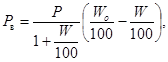
где Рв - необходимое количество воды, которую нужно добавить в смеси, т;
Р - вес материала, подлежащего увлажнению, т;
W - естественная влажность смеси, % от веса (определяемая одним из методов, приведенных в приложении 1, п. 3);
Wо - оптимальная влажность смеси, % от веса.
5.5. Готовую смесь рекомендуется укладывать распределителем щебня или бетоноукладочными машинами Д-345, Д-375.
5.7. В период уплотнения и последующего твердения влажность смеси должна быть оптимальной.
Плотность смеси для покрытия однослойного или двухслойного основания, а также нижнего слоя основания после уплотнения должна быть соответственно не менее 0,98 и 0,95 от максимальной, установленной в лаборатории методом стандартного уплотнения или на прессе (приложение 1, п. 3).
Пробы для определения плотности отбирают через каждые 100 м, по три пробы на каждом поперечнике.
В жаркую погоду при сильном ветре после розлива пленкообразующих веществ поверхность готового основания (покрытия) необходимо закрыть слоем песка не менее 5 см (п. 1.7) и увлажнять его в течение 7 - 10 суток.
5.9. Все работы по приготовлению смеси из обломочных материалов и уплотнению ее должны быть закончены в течение одной смены. При этом укатка смеси должна быть закончена не позднее 3 - 4 ч, а при пониженных положительных и отрицательных температурах не позднее 5 - 6 ч с момента введения воды или солевого раствора.
5.10. Длину участка устраиваемого основания (захватку) назначают в соответствии с реальными производственными возможностями и с учетом прогноза погоды.
5.11. В условиях пониженных положительных и отрицательных температур допускается устраивать во II - IV дорожно-климатических зонах только однослойные основания.
При производстве работ сохраняют в основном ту же последовательность операций и используют те же механизмы, что и при температурах выше 0 °С, с дополнениями, приведенными в пп. 5.2 - 5.3.
5.12. Сменная захватка должна быть не более 150 - 200 м. Приготовленную смесь вывозят, распределяют, профилируют и уплотняют в сжатые сроки и без задержек (под постоянным наблюдением и контролем руководителя работ и лица, ответственного за работу механизмов).
5.13. Солевой раствор приготовляют в специальных емкостях и тщательно перемешивают до полного растворения соли. Вода, содержащаяся в растворе, служит одновременно и для увлажнения материала до оптимальной влажности (приложение 2, п. 2).
Для сохранения оптимальной влажности в смеси готовое основание закрывают слоем песка толщиной не менее 5 см, который после набора проектной прочности (с наступлением устойчивых теплых дней) убирают автогрейдером и механической щеткой на обочины.
5.14. На участках дорог, устраиваемых в условиях пониженных положительных и отрицательных температур в зимний период не допускается движение транспорта. Движение разрешается открывать после достижения требуемой прочности (через 2 - 3 недели после установления теплой погоды).
5.15. Смеси, приготовленные в стационарных установках, наиболее целесообразно применять при устройстве облегченных покрытий и верхних слоев оснований, а также при ведении работ в населенных пунктах, в городских условиях и при уширении дороги.
Производство работ способом смешения на дороге
5.16. При устройстве оснований из крупнообломочных материалов, укрепляемых цементом, способом смешения на дороге (п. 1.9) выполняют следующие технологические операции (приложение 3, схема № 2):
а) вывозят обломочный материал на земляное полотно и распределяют его на 2/3 ширины проезжей части;
б) распределяют цемент и перемешивают его с материалом. При этом смесь увлажняют до оптимальной влажности. Воду вводят через распределительное устройство грунтосмесительных машин Д-530, Д-391;
в) профилируют, уплотняют и осуществляют уход за готовым основанием (пп. 5.6 - 5.8).
5.17. До распределения цемента определяют влажность материала полевыми методами (приложение 1, п. 2) и рассчитывают необходимое количество воды (п. 4.6).
В зависимости от фактической влажности материала (при необходимости) его увлажняют или просушивают перемешиванием грунта фрезой или автогрейдером.
5.18. Цемент вводят в обрабатываемый материал распределителем цемента Д-343Б.
Цемент перемешивают с материалом за 2 - 3 прохода фрезы Д-530 на первой и третьей скорости. В процессе перемешивания цемента с грунтом увлажняют смесь (п. 5.16, в).
5.19. Готовую цементногрунтовую смесь разравнивают автогрейдером, контролируя при этом поперечный уклон шаблоном и ровность трехметровой рейкой. Затем выполняют операции, указанные в пп. 6.7 и 5.8. Следует учитывать, что при перемешивании слабого известнякового щебня с цементом необходимо вслед за смесительной машиной пускать легкий каток для того, чтобы образование известняковой мелочи происходило в процессе смешения, а не в период окончательного уплотнения смеси.
5.20. При выполнении больших объемов работ по укреплению цементом крупнообломочных материалов с максимальной крупностью частиц до 25 мм рекомендуется применять однопроходную грунтосмесительную машину Д-391, которая дозирует цемент, воду и перемешивает цемент с материалом до однородной массы за один проход при глубине обработки от 8 до 25 см в плотном теле и ширине обрабатываемой полосы 2,4 - 2,5 м. При проходах соседние полосы перекрывают на ширину 10 - 20 см.
При работе с однопроходной машиной цемент в аэрированном состоянии подают по шлангу в дозировочное устройство смесителя непрерывно на ходу из автоцементовоза (С-571, С-652, С-853), толкаемого грунтосмесительной машиной. Цементногрунтовую смесь увлажняют до оптимальной влажности через распределительное устройство грунтосмесительной машины; воду подвозят поливомоечными машинами. Готовую смесь профилируют, уплотняют и осуществляют уход в соответствии с пп. 5.7 и 5.8.
При устройстве двухслойного основания материал для верхнего слоя, приготовленный в установке, разрешается вывозить и разгружать на готовый нижний слой сразу или через 7 дней после его устройства.
6.1. При устройстве оснований и покрытий из обломочных материалов, укрепляемых портландцементом, должна быть организована полевая лаборатория (СНиП III-Д.5-62), которая контролирует:
а) плотность и влажность земляного полотна;
б) дозировку вяжущих и химических добавок;
в) влажность смеси перед перемешиванием с цементом и после перемешивания и перед уплотнением;
г) плотность готового основания или покрытия;
д) ровность готового основания или покрытия;
е) прочность контрольных образцов из обломочных материалов, укрепленных цементом.
Полевая лаборатория фиксирует время и место взятия проб, расход цемента и других материалов.
6.2. Технологическую последовательность рабочих процессов по устройству оснований или покрытий, а также расход материалов и учет работы механизмов фиксируют в журнале за каждую смену (приложение 4, форма 1).
6.3. Ровность основания или покрытия в продольном и поперечном направлениях к оси дороги проверяют нивелиром или трехметровой рейкой. Наибольший зазор под рейкой не должен быть более 10 мм.
6.4. При перевозке готовой смеси из обломочных материалов, укрепленных цементом, в жаркую ветреную погоду кузов автомобиля-самосвала необходимо закрывать брезентом или тентом.
6.5. Производительность смесителя и качество перемешивания смеси устанавливают отбором проб в конце установленного периода времени перемешивания.
Из отобранных проб изготовляют образцы. Распределение цемента и перемешивание с грунтом оценивают по прочности образцов при сжатии и расколе.
6.6. Качество готового основания (покрытия) из цементогрунта оценивают сопоставлением объемного веса и прочностных свойств образцов, приготовленных из смесей, укладываемых в основании (приложение 1, пп. 4 - 7), и опытных образцов, изготовленных в лаборатории в соответствии с требованиями, приведенными в табл. 1, 2 и 8.
6.7. Нарастание прочности готового основания (покрытия) из обломочных материалов, укрепленных цементом, рекомендуется определять рычажным прогибомером или пробными нагружениями на штамп, а также отбором вырубок через 28 суток после окончания работ размером 30´30 см или кернов диаметром 10 - 15 см в количестве 2 - 3 проб с каждого километра готового основания или покрытия.
В условиях отрицательных температур эти пробы отбирают через 28 суток после наступления устойчивых положительных температур воздуха.
Пробы отбирают на расстоянии 1 м от края основания или покрытия.
6.8. При строительстве оснований в условиях пониженных положительных и отрицательных температур воздуха необходимо соблюдать действующие «Правила техники безопасности при работе на дорожных машинах» ВП 110-58 (М., Автотрансиздат, 1958), «Правила техники безопасности для предприятий автомобильного транспорта» М., Автотрансиздат, 1961).
1. Определение объемного веса обломочных материалов
При отборе проб в полевых условиях. Насыпанный в стальную цилиндрическую форму грунт уплотняют ударником Дорнии. Крупнообломочные материалы уплотняют до постоянного объема 40 ударами в три слоя, а песок - 15 - 20 ударами в один слой.
Объемный вес обломочного материала, уплотненного ударником Дорнии, стандартным прибором Союздорнии или на прессе, рассчитывают по формуле (1)
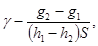
где g1 - вес формы, г;
g2 - вес формы с обломочным материалом, г;
h1 - внутренняя высота формы, см;
h2 - расстояние от поверхности грунта до верхнего края формы, см;
S - площадь основания формы, см2.
При отборе проб в основании или покрытии дороги методом засыпки лунки песком. Для определения объемных весов обломочных материалов в дорожном основании делают лунки диаметром 10 - 25 см (меньшие размеры - для песка, большие - для крупнообломочного материала).
Материал тщательно выбирают из лунок и помещают в резиновые мешки, плотно завязывают, чтобы сохранить влажность материала. Для определения объема лунок над каждой из них устанавливают кольцо и воронку (рис. 1).
Через воронку постепенно лунки заполняют до краев кольца одномерным сухим песком средней крупности. Для определения объема лунки и кольца песок засыпают мерными сосудами емкостью 2; 1; 0,5; 0,25 л (с делениями).
Влажность пробы определяют в лаборатории. Объемный вес обломочных материалов, обработанных цементом (уплотненных) в дорожных основаниях и покрытиях, вычисляют по формуле
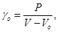
где γo - объемный вес слоя уплотненной дорожной одежды, г/см3;
Р - вес пробы материала, взятой из лунки, в высушенном состоянии, г;
V - объем сухого тела, необходимого для заполнения лунки и кольца, см3;
Vо - объем кольца, см3.
Рис. 1. Определение плотности объемного веса основания или покрытия из обломочных материалов, укрепленных цементом, методом засыпки лунки песком:
1 - лунка; 2 - кольцо; 3 - воронка
2. Определение влажности полевыми методами
Влажность песка в полевых условиях определяют прибором Ковалева. Влажность крупнообломочного материала определяют на фракции меньше 10 мм, для этого среднюю пробу просеивают через сито с размером отверстий 10 мм, из которой навеску 100 - 200 г помещают в фарфоровую чашу диаметром 10 - 12 см и взвешивают. Материалы в чаше смачивают денатуратом и поджигают. Затем чашу с навеской охлаждают, и эту операцию повторяют до тех пор, пока разница между последующими взвешиваниями будет не более 0,1 г.
Влажность фракции крупнее 10 мм в зависимости от содержания ее в смеси и происхождения каменного материала принимают по табл. 1.
Таблица 1
Ориентировочное значение влажности фракций размером более 10 мм, содержащихся в крупнообломочном материале
|
Ориентировочное значение влажности, % no весу, при содержании фракций крупнее 10 мм, доли единицы |
||||||||
|
0,1 |
0,2 |
0,3 |
0,4 |
0,5 |
0,6 |
0,7 |
0,8 |
|
|
Изверженные породы |
0,1 |
0,2 |
0,3 |
0,4 |
0,5 |
0,6 |
0,7 |
0,8 |
|
Осадочные |
0,6 |
1,2 |
1,8 |
2,4 |
3,0 |
3,5 |
4,1 |
4,7 |
|
Смешанные |
0,5 |
0,9 |
1,4 |
1,9 |
2,4 |
2,8 |
3,3 |
3,8 |
Влажность обломочных и песчаных смесей до и после укрепления их цементом определяют также с помощью карбида кальция, в приборе ВП-2 (Госавтодорнии).
Для этого навеску материала крупностью до 10 мм в количестве 70 г или навеску песка 30 г помещают внутрь прибора. После этого в прибор высыпают молотый карбид кальция. Плотно завернув крышку прибора, энергично встряхивают его, чтобы реагент просыпался на материал. Влажный материал или смесь перемешивают с карбидом кальция путем встряхивания прибора в течение трех минут, после чего берут отсчет по манометру.
Примечание. При определении влажности материала этим методом необходимо проверить герметичность прибора (горящую спичку подносят ко всем соединениям и следят, чтобы при этом не было вспышек).
Влажность крупнообломочного материала определяют по формуле
W = W1(1 - a) + W2, (3)
где W1 - влажность, % фракции мельче 10 мм, определенная по одному из способов (п. 2 приложения 1);
а - содержание крупных включений размером более 10 мм, доли единиц;
W2 - ориентировочная влажность, % по весу, частиц крупнее 10 мм в зависимости от содержания их в крупнообломочном материале, определяется по табл. 1 приложения 1.
3. Определение оптимальной влажности и максимальной плотности обломочных материалов
Оптимальную влажность и максимальную плотность песков, укрепленных цементом, определяют в малом или большом (емкости соответственно 0,1 и 1 л) приборе Союздорнии для стандартного уплотнения (приложение II «Указаний» СН 25-64 и «Инструкция по определению плотности и контролю за уплотнением земляного полотна автомобильных дорог» ВСН 55-69).
Оптимальную влажность обломочных материалов, укрепленных цементом, содержащих 20 % и более фракций от 10 до 50 мм, определяют в специальных цилиндрических формах емкостью 3 л, руководствуясь «Указаниями» СН 25-64 и «Инструкцией» ВСН 97-63.
Оптимальную влажность обломочных материалов, укрепленных цементом, можно также вычислить по эмпирической формуле
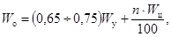
где Wо - оптимальная влажность смеси, % по весу;
0,65 ÷ 0,75 - эмпирические коэффициенты, характеризующие материалы по зерновому и петрографическому составам, первый - для крупнообломочных смесей и гравелистых песков из изверженных и метаморфических пород, второй - для песка средних, мелких и пылеватых, а также крупнообломочных смесей из осадочных пород;
Wy - водоудерживающая способность материала, %;
n - расход цемента, %;
Wц - нормальная густота цементного теста, %, которая для портландцемента составляет от 25 до 30 %.
Если оптимальная влажность смеси, найденная по указанной формуле, окажется недостаточной (смесь не комкуется в руке) или, наоборот, излишней (смесь комкуется в руке, пачкая ее), то следует проводить контрольное определение ее по стандартной методике, указанной в «Инструкции» ВСН 97-63.
Для определения водоудерживающей способности материала Wy навеску (около 1,6 кг для песка и около 12 кг для обломочного материала) высушивают до постоянного веса, заполняют цилиндрическую стальную разборную форму (размеры приведены в табл. 12) с насадкой (надставкой), затем материал взвешивают в форме и помещают в сосуд, который заливают водой до высоты образца.
Образец с формой выдерживают в воде в течение суток. Затем форму с материалом извлекают из воды, через 10 - 15 мин обтирают ветошью и уплотняют на прессе давлением 150 кГ/см2, выдерживая под нагрузкой 3 мин, после чего форму с материалом взвешивают с точностью до грамма. По разности в весе уплотненного после насыщения водой образца с формой и сухого образца (также с формой) вычисляют водоудерживающую способность обломочного материала по формуле
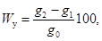
где Wу - водоудерживающая способность, % веса;
g2 - вес образца, насыщенного водой, с формой;
g1 - вес образца в сухом состоянии с формой;
g0 - навеска материала в сухом состоянии.
Под водоудерживающей способностью обломочного материала следует понимать способность его удерживать воду после уплотнения насыщенного водой образца стандартной нагрузкой.
Примечание. При ускоренном методе допускается определение водоудерживающей способности обломочного материала после двухчасового выдерживания образца в воде.
Из двух значений оптимальной влажности, полученных по эмпирической формуле, выбирают то, при котором образец, уплотненный под давлением 150 кГ/см2, имеет максимальный объемный вес в пересчете на сухой скелет.
Ориентировочные значения оптимальной влажности обломочных материалов без цемента могут быть приняты по табл. 2 приложения 1.
Таблица 2
Ориентировочные значения оптимальной влажности обломочных материалов
|
Содержание фракций менее 0,071 мм, % по весу смеси |
Ориентировочная оптимальная влажность, % по весу |
|
|
Крупнообломочные щебенистые |
5 - 20 |
3 - 5 |
|
дресвяные |
5 - 20 |
5 - 7 |
|
Пески: |
||
|
гравелистые |
2 - 20 |
4 - 6 |
|
крупные |
3 - 20 |
6 - 8 |
|
средней крупности |
5 - 20 |
7 - 9 |
|
мелкие и пылеватые, мелкие одномерные |
10 - 20 |
10 - 12 |
4. Определение прочности при сжатии образцов
Прочность при сжатии и другие характеристики обломочных материалов, укрепленных цементом, определяют уплотнением образцов на малом или большом приборе Союздорнии для стандартного уплотнения (в зависимости от содержания частиц размером более 5 мм в смеси) при оптимальной влажности и максимальной плотности. Образцы для указанных испытаний могут быть также приготовлены в металлических формах (табл. 3 приложения 1) при уплотнении на прессе. Статическое давление, соответствующее максимальной плотности образца, определенное методом стандартного уплотнения, принимают для обломочных материалов равным 160 кГ/см2. Оптимально увлажненный образец выдерживают под нагрузкой 3 мин. Для цикла стандартных испытаний изготовляют шесть образцов.
Таблица 3
Размеры пресс-форм, необходимых при определении физико-механических свойств образцов
|
Материалы |
||||
|
крупнообломочные |
песчаные |
|||
|
Размеры форм, мм |
||||
|
диаметр |
высота |
диаметр |
высота |
|
|
Определение оптимальной влажности, объемного веса, предела прочности при сжатии |
70,1 - 100,1 150 - 200 |
170 - 180 150 - 200* |
50 - 100 |
130 - 180 |
|
Определение модуля деформации, модуля упругости и сопротивления растяжению при расколе |
100,1 |
180 |
100,1 |
180 |
|
Определение сопротивления растяжению при изгибе (на балочках) |
100´100´400 |
40´40´160 |
||
* Формы диаметром 200 мм применяют для изготовления образцов с наибольшей крупностью зерен 70 мм.
Примечания. 1. Формы диаметром 150 и 200 мм имеют съемные кольца-насадки высотой соответственно 50 и 100 мм и плунжер.
2. Из обломочных материалов, укрепленных цементом, изготовляют образцы высотой, равной диаметру.
3. Максимальная крупность частиц при изготовлении образцов-балочек из обломочных материалов должна быть не более 25 мм.
Для обломочных материалов, укрепленных цементом, нормативная прочность при сжатии, с учетом коэффициента приведения составляет:
Размер образца цилиндра, мм............... 200 150 100 70 50
Коэффициент приведения..................... 1,20 1,10 1,00 0,85 0,65
Потребное количество портландцемента для укрепления обломочных материалов при строительстве дорожных оснований (покрытий) в условиях положительных и отрицательных температур воздуха ориентировочно принимают по табл. 1 и 9 настоящих «Технических указаний».
Изготовляют две смеси с расходами, указанными в табл. 6 и 9, и одну с расходом цемента на 1,0 - 1,5 % выше.
При использовании портландцемента других марок его расход составляет:
Марка цемента........................................ 600 500 400 300
Относительный расход цемента........... 0,8 0,9 1,0 1,2
Изготовленные образцы хранят в среде с относительной влажностью воздуха не менее 95 % (вплоть до испытаний) при комнатной температуре 18 - 20 °С. Возраст к началу испытаний должен составлять 28 суток (или 7 суток при ускоренных испытаниях).
Образцы диаметром 20 см хранят в обоймах при этих же условиях. По истечении этого срока три параллельных образца испытывают на прочность при сжатии R после 3 суток насыщения водой, другие три образца подвергают замораживанию-оттаиванию, количество циклов назначают по табл. 7 настоящих «Технических указаний». Образцы насыщают следующим образом: в первые сутки образец помещают в ванну и заливают водой на 1/3 высоты, а затем на всю высоту и выдерживают 48 ч.
Общее количество поглощенной воды вычисляют по формуле
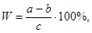
где W - водопоглощение, % по весу;
a - вес образца (с обоймой) после насыщения водой, г;
b - первоначальный вес изготовленного образца (с обоймой), г;
c - первоначальная навеска сухих материалов (минерального материала и цемента) и воды, взятой для изготовления образца, или первоначальный вес образца без обоймы, г.
При ускоренном испытании предусматривается хранение образцов в течение 7 суток. Тогда прочность образцов в 28-суточном возрасте ориентировочно определяют по следующей эмпирической формуле:
R28 = 1,5R7. (7)
При испытании образцов на многократное замораживание и оттаивание их насыщают водой, а затем помещают каждый в отдельности в резиновые мешки, туго завязываемые. Образцы загружают в холодильную камеру, когда температура ее достигает -5 °С, затем в течение 1,5 - 2 ч температуру понижают до -20 °С.
Расстояние между образцами должно быть не менее половины их диаметра по всем направлениям. Общий объем загруженных образцов должен быть не более половины объема камеры. Температура воздуха в камере измеряется на уровне образцов, но не выше 1/2Н (где Н - высота камеры). Продолжительность одного цикла замораживания-оттаивания принимают в зависимости от размера образцов (табл. 4 приложения 1).
Таблица 4
Продолжительность цикла замораживания и оттаивания в зависимости от вида материалов и размера образцов
|
Время замораживания (числитель) время оттаивания (знаменатель), ч, не менее для образцов размером, см |
|||
|
5 |
11 |
20 |
|
|
Крупнообломочные: |
|||
|
изверженные и метаморфические |
6/5 |
8/6 |
|
|
осадочные (известняки и доломиты) |
7/6 |
11/9 |
|
|
песчаные |
4/3 |
7/6 |
9/6 |
Если после испытания на морозостойкость поверхность образца, прилегающая к плите пресса, разрушается более чем на 15 % первоначальной площади, то подливают цементное тесто. Контрольные образцы испытывают в водонасыщенном состоянии перед началом замораживания.
Для получения данных о строительстве оснований из обломочных материалов, укрепленных цементом, при отрицательных температурах приготавливают по девять образцов (три партии) для каждого состава, которые хранят следующим образом. Первая партия хранится 28 суток в холодильной камере и 28 суток в воздушно-влажной среде; вторая партия - 56 суток в воздушно-влажной среде для выяснения влияния на цементогрунт отрицательных температур в первые сроки твердения, третья партия хранится 28 дней в холодильной камере, 28 дней в воздушно-влажной среде и проходит испытания на замораживание-оттаивание (табл. 7 настоящих «Технических указаний»). Снижение прочности после испытания на морозостойкость должно быть не более 30 % по сравнению с R56.
Все образцы испытывают в водонасыщенном состоянии.
Рациональный расход цемента определяют по результатам испытания образцов с различными добавками цемента. Выбирают смесь с прочностью на сжатие и изгиб, отвечающую требованиям табл. 1 и 2 настоящих «Технических указаний».
Результаты испытаний и состав рекомендуемой к строительству смеси записывают в ведомость (форма 2, приложение 4).
Для определения прочности при сжатии образцов из обломочных материалов, укрепленных цементом, уложенных в основание, с каждых 150 - 200 м готового основания берут пробы и изготовляют из них по девять образцов.
Из цементопесчаных смесей изготовляют образцы диаметром и высотой 5 см, уплотненные 15 - 20 ударами (приложение 2, п. 1, а), а из крупнообломочных смесей - образцы диаметром и высотой 20 см, уплотненные ударником или на приборе стандартного уплотнения Союздорнии три слоя по 40 ударов на каждый слой. При отборе проб с готового основания допускается изготавливать контрольные образцы-кубы с размером грани 10 - 20 см. Уплотняют также, как и образцы цилиндры.
Из девяти образцов три хранят в условиях твердения основания в течение шести месяцев. Остальные шесть хранят в лабораторных условиях в воздушно-влажной среде. Три из них испытывают на сжатие через 28 суток, а остальные - через шесть месяцев, которые сравнивают с образцами, хранящимися в условиях твердения основания.
Все образцы испытывают в водонасыщенном состоянии. При контрольном испытании прочности готового основания (покрытия) взятые вырубки за 7 суток до испытания на сопротивление сжатию выравнивают при необходимости цементным раствором 1 : 3 (особенно нижнюю поверхность). Испытывают на гидравлическом прессе через штамп диаметром 10 - 15 см. Полученные прочности следует уменьшить на 15 - 20 %.
При отборе контрольных проб с готового основания (покрытия) в виде кернов испытание прочности их производят на растяжение при расколе (см. п. 7, приложение 1). По полученной прочности определяют сопротивление растяжению при изгибе по формуле (3), которое сравнивают с требуемым в табл. 1 настоящих «Технических указаний».
В каждом случае после испытания образцов отбирают среднюю пробу для определения влажности путем высушивания ее до постоянного веса при температуре 110 °С. Полученные значения пределов прочности при сжатии и соответствующую им влажность фиксируют в ведомости (форма 3, Приложение 4).
5. Определение модуля упругости и модуля деформации цементогрунтов
Возраст образцов при испытании составляет 28 суток. За сутки до испытаний образец подвергают насыщению водой при нормальных условиях.
Образец диаметром и высотой 10 см помещают в форму, диаметр которой несколько больше диаметра образца. Сверху образца устанавливают штамп диаметром, равным образцу. В держатели, жестко скрепленные со штампом, устанавливают индикаторы с точностью измерения 0,01 мм.
Ножки индикаторов упираются в головки винтов, расположенных диаметрально по краям формы. Образец с формой устанавливают на нижнюю плиту 10-тонного гидравлического пресса. Обжатие производится нагрузкой, равной 10 % от предела прочности при сжатии, которую выдерживают в течение 3 - 5 мин, а затем сжимают до давления 1 кГ/см2, после чего стрелку индикаторов устанавливают на нуль. Затем создают плавное нагружение ступенями 2,5 - 5 кГ/см2 (интервал не более 10 % от предела прочности) до разрушения. Каждую ступень нагрузки выдерживают до затухания деформации с последующей разгрузкой до 1,0 кГ/см2. Деформации вычисляют как полусумму показаний двух индикаторов. Модули упругости и деформации определяют при нагрузке, равной 0,5 - 0,6 от предела прочности при сжатии.
Модули деформации и упругости вычисляют по формуле
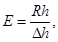
где
R - напряжение, кГ/см2, 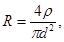
Dhу = Dhп - Dhо;
Dhо - остаточная деформация, см;
d - диаметр образца, см;
h - высота образца, см;
р - нагрузка, кГ.
Модуль деформации и упругости определяют как среднее из трех параллельных образцов. Результаты испытаний записывают в ведомость (форма 4, приложение 4).
6. Определение сопротивления растяжению при изгибе
Сопротивление растяжению при изгибе обломочных и песчаных материалов, укрепленных цементом, определяют на образцах-балочках размером соответственно 10´10´40 см и 4´4´16 см.
Максимальная крупность частиц при изготовлении образцов-балочек крупнообломочных смесей должна быть не более 25 мм. Допускается замена более крупных фракций (25 - 70 мм) равным по весу количеством фракций от 10 до 25 мм. Образцы изготовляют при оптимальной влажности в стальных формах (рис. 2 и 3) под давлением 150 кГ/см2. Образцы выдерживают под нагрузкой в течение 3 мин. Для цикла стандартных испытаний изготовляют шесть образцов. Изготовленные образцы хранят в воздушно-влажной среде при относительной влажности воздуха не менее 95 % и температуре 18 - 20 °С.
Рис. 2. Пресс-формы для приготовления образцов-балочек из материалов:
а - крупнозернистых (общий вид); б - песчаных; 1 - форма; 2 - вкладыши
После 28 суток хранения образцы насыщают водой в течение 3 суток, затем испытывают на изгиб на рычажном прессе. Образцы укладывают на опоры, расстояние между которыми 30 или 14 см, при этом одна из опор подвижная. Нагрузку на образец прикладывают в средней части на всю ширину балочки. Изменение нагрузки на образец размером 10´10´40 см и 4´4´16 см не должно превышать соответственно 1,5 и 0,2 кГ/см2 · сек.
Величину сопротивления изгибу определяют по формуле
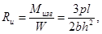
где Rи - сопротивление растяжению при изгибе, кГ/см2;
Mизг - изгибающий момент в середине пролета, равный кГсм2;
W
- момент сопротивления образца-балочки, равный 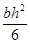
p - нагрузка на образец, кГ, при которой началось вязкое течение и произошло разрушение материала;
l - расстояние между опорами, см;
b - ширина образца, см;
h - высота образца, см.
7. Определение сопротивления растяжению при расколе
Сопротивление растяжению при расколе для обломочных материалов, укрепленных портландцементом, определяют на образцах-цилиндрах диаметром и высотой 10 - 11 см (табл. 12). Образцы изготовляют, хранят и испытывают так же, как указано в п. 4. приложения 1.
Испытывают на раскол на прессе мощностью не более 5Т на трех параллельных образцах в возрасте 28 суток. Образцы устанавливают между двумя параллельными плоскостями (рис. 4). Через круглые плунжеры размером, равным 1/10 диаметра образца, по двум диаметрально противоположным поверхностям образца-цилиндра прикладывается сила Р, которая в плоскости, перпендикулярной к приложению нагрузки, вызывает растягивающие напряжения Rр.
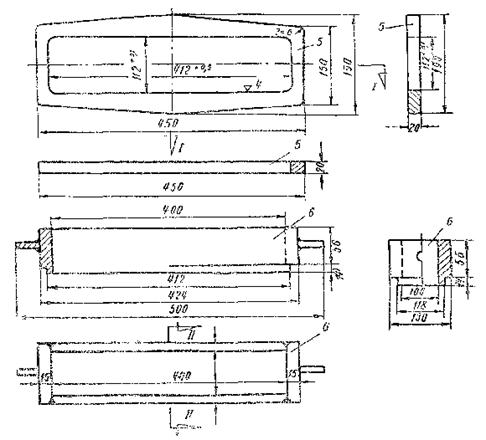
Рис. 3. Детали пресс-формы для крупнообломочных смесей:
1 - днище; 2 - продольные стенки; 3 - поперечные стенки; 4 - стягивающие болты; 5 - рамка жесткости; 6 - насадка; 7 - плунжер
При испытании образцов на раскол необходимо обеспечить плотное прилегание круглого плунжера к поверхности образца. Нагрузка должна возрастать непрерывно и равномерно на величину не более 2 кГ/см2 · сек до разрушения образца.
Величину сопротивления растяжению при расколе определяют по формуле
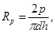
где Rр - сопротивление растяжению при расколе, кГ/см2;
p - нагрузка, кГ, при которой образец разрушается;
D - диаметр образца, см;
h - высота образца, см;
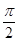
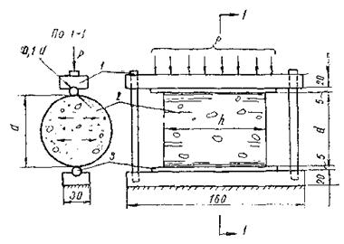
Рис. 4. Схема испытаний образцов-цилиндров на растяжение методом раскола:
1 - верхняя подвижная плита; 2 - образец диаметром d; 3 - прокладка (плунжер); Р - сжимающее усилие
Величину сопротивления при расколе вычисляют с точностью до 0,5 кГ/см2, как среднеарифметическое значение из двух наибольших результатов испытанных образцов.
8. Определение мергелистости известняка
Мергелистость известняка характеризуется количеством остатка, нерастворимого в 10 %-ной соляной кислоте (т.е. содержанием пылевато-глинистых частиц).
Навеску известняка 10 г в виде зерен размером менее 5 мм, предварительно высушенную при температуре 110 °С, помещают в химический стакан емкостью 250 см3 и заливают небольшими порциями 10 %-ной соляной кислоты до прекращения выделения пузырьков углекислоты.
Навеску растворяют при слабом нагревании.
По окончании реакции осадок отфильтровывают и пять раз промывают на фильтре горячей водой. Затем осадок смывают горячей водой в химический стакан, откуда его порциями переносят в заранее взвешенную фарфоровую чашу диаметром 6 - 7 см, в которой высушивают при температуре 110 - 120 °С до постоянного веса. Остаток взвешивают на аналитических или технических весах. Мергелистость вычисляют по отношению к первоначальной навеске известняка по формуле.
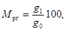
где Mрг - мергелистость известняка, %;
g0 - навеска высушенного известняка, г;
g1 - сухой остаток, г.
Примечание. Необходимо обратить внимание и зафиксировать, из каких частиц состоит остаток: тонких глинистых или песчаных.
1. Пример расчета и выбора состава цементногрунтовой смеси
Предположим, что необходимо приготовить цементнопесчаную смесь для устройства дорожного основания при температуре -5 °С. Согласно данным таблиц выбирают цементнопесчаные смеси с расходом цемента 7, 8 и 9 % и добавкой соли 6 % от веса оптимального количества воды. Опытным путем определяют, что водоудерживающая способность песка, равна 10,2 % (приложение 1, п. 3). Оптимальную влажность цементнопесчаной смеси вычисляют по формулам:
1)
2)
3)
При этом состав (%) цементногрунтовой смеси будет такой:
|
1 |
2 |
3 |
|
|
Песок (сухой) |
93 |
92 |
93 |
|
Цемент |
7 |
8 |
9 |
|
Вода |
9,6 |
10 |
10,3 |
Изготовленные из указанных выше цементногрунтовых смесей образцы испытывают на прочность при сжатии и морозостойкость (приложение 1, п. 4). На основании полученных результатов испытания из трех смесей с различными расходами портландцемента производству рекомендуют ту, которая удовлетворяет в данном случае требованиям табл. 1, 2 и 7 настоящих «Технических указаний».
2. Пример расчета материалов, необходимых для устройства основания или покрытия
Предположим, что для устройства дорожного основания или покрытия при температуре -5 °С в лабораторных условиях подобран следующий состав (%) смеси из среднезернистого песка, укрепленного цементом: портландцемента - 8, песка - 92; оптимальное количество воды - 10.
Объемный вес плотной (влажной) смеси - 1800 кг/м3. На 1 м3 цементногрунтовой смеси (в плотном теле) требуется
портландцемента 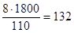
песка 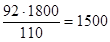
воды 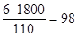
В соответствии с данными табл. 5 и 6 настоящих «Технических указаний» при температуре воздуха -5 °С на каждые 100 г воды требуется 6 г хлористого натрия, или на 0,1 кг воды 0,006 кг хлористого натрия. Отсюда следует, что на 1 м3 цементногрунтовой смеси необходимо хлористого натрия:
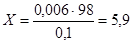
Количество цемента, песка и воды на 1 км дороги для основания рассчитывают по формуле
Q = N · S · l β,
где N - количество материалов на 1 м3 цементногрунтовой смеси;
S - площадь поперечного сечения основания, м2;
l - длина участка дороги с укрепленным основанием;
b - коэффициент потери материала в процессе производственных работ (по опытным данным равен 1,02 - 1,05).
Пользуясь рассчитанным выше составом цементнопесчаной смеси на 1 м3, получим количество материалов, необходимых на 1 км цементногрунтового слоя при ширине основания 7 м и толщине слоя 0,18 м.
По весу: портландцемент - 0,132 · 7 · 0,18 · 1000 · 1,02 = 170 т, песок - 1,5 · 7 · 0,18 · 1000 · 1,02 = 1900 т, вода - 0,98 · 7 · 0,18 · 1000 · 1,02 = 126 т, хлористый натрий - 0,0059 · 7 · 0,18 · 1000 · 1,02 = 7,50 т.
По объему: портландцемент - 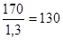 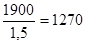
Предположим, что естественная влажность песка была 4 %
(по отношению к сухому песку). Тогда количество воды в песке на 1 км дороги
составит 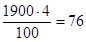
Отсюда следует, что для получения оптимальной влажности цементнопесчаной смеси на 1 км дороги необходимо добавить воды: 126 - 76 = 50 т.
На базе имеется приготовленный 26 %-ный раствор соли
плотностью 1,17; чтобы ввести 7,5 т соли, надо взять 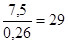
В этом количестве раствора содержится 29 · 0,74 = 21,5 т воды. Следовательно, необходимо ввести 50 - 21,5 = 28,5 т воды дополнительно, чтобы достигнуть оптимальной влажности. Вода и раствор распределяются поливомоечной машиной.
Примерная технологическая схема № 1
Устройство однослойного основания (или верхнего слоя покрытия) из крупнообломочных и песчаных материалов, укрепленных цементом, в стационарных смесителях Д-370, С-543 или Д-709 при положительных, пониженных положительных и отрицательных температурах.
|
Номер операций |
Технологическая последовательность рабочих процессов |
Применяемые машины |
|
1 |
Дозирование составляющих (грунт, цемент, вода, хлористые соли) и перемешивание смеси в течение 3 - 5 мин |
Смеситель Д-370, бетономешалки С-543, Д-709 |
|
2 |
Выгрузка готовой смеси в автомобили-самосвалы и доставка ее к месту укладки |
Автомобиль-самосвал ЗИС-585 |
|
3 |
Выгрузка смеси в бункер самоходного щебнеукладчика и распределение по готовому земляному полотну или подстилающему слою |
Щебнеукладчик* Д-337А* |
|
4 |
Уплотнение слоя укрепленного цементом грунта самоходными катками на пневмошинах за 15 - 18 проходов по одному следу, причем первые 2 на первой скорости средние - на второй и последние - на третьей. Проверка профиля основания по шаблону и ровности - трехметровой рейкой |
Катки Д-627, Д-551 |
|
5 |
Розлив битумной эмульсии по готовому основанию (покрытию) в количестве 1,0 - 1,2 кГ/м2 (50 %-ной концентрации) вязкого битума 0,3 - 0,4 кГ/м2 или распределение песка слоем толщиной не менее 5 см с увлажнением в течение 7 - 10 суток |
Автомобили-самосвалы ЗИЛ-585, грейдер или автогрейдер Д-598 или Д-446, поливомоечная машина КПМ-1 или ПМ-20 |
* В случае устройства основания из цементогрунта под цементнобетонное покрытие целесообразно применять при укладке смеси распределитель бетона.
Количество машин в отряде
Грунтосмесительная машина Д-370 или бетономешалка С-543, Д-709................. 1
Щебнеукладчик Д-337А.............................................................................................. 1
Автоцементовозы С-853........................................................................................... 3 - 4
Поливомоечные машины ПМ-20............................................................................. 2 - 3
Автогрейдер Д-598, Д-446........................................................................................... 1
Самоходный каток на пневмошинах Д-365, Д-627................................................ 1 - 2
Автогудронатор Д-251................................................................................................. 1
Примерная технологическая схема № 2
Устройство однослойного дорожного основания из крупнообломочных материалов, укрепленных цементом, способом смешения на дороге фрезой Д-530.
|
Номер операций |
Технологическая последовательность рабочих процессов |
Применяемые машины |
|
1 |
Устройство подстилающего слоя (если предусмотрено проектом) |
Автомобиль-самосвал ЗИЛ-585 |
|
Доставка песка, разравнивание, профилирование и уплотнение до максимальной плотности при оптимальной влажности |
Автогрейдер Д-446 или грейдер, катки Д-627, Д-551, поливомоечная машина КПМ-1 или ПМ-20 |
|
|
2 |
Доставка материала на готовый подстилающий слой |
Автомобиль-самосвал ЗИЛ-585 |
|
3 |
Разравнивание материала по ширине основания |
Автогрейдер Д-598 или Д-446 или грейдер. |
|
4 |
Подвозка и розлив воды с доведением влажности материала до 0,5 от оптимальной |
Поливомоечная машина КПМ-1 или ПМ-20 |
|
5 |
Подкатка слабого известнякового щебня катками за 3 - 4 прохода по одному месту |
Катки Д-627, Д-551 |
|
6 |
Подвозка воды и цемента в количестве, потребном по расчету |
Цементовоз С-571 или С-853, С-652, поливомоечная машина КПМ-1 или ПМ-20 |
|
7 |
Введение цемента в материал специальными распределителями или другими дозировщиками за 2 - 4 прохода при дозировке цемента 15 - 35 кг/м2 |
Распределитель цемента Д-343Б, цементовоз С-571, С-853 или С-652: |
|
8 |
Перемешивание цемента с обломочным материалом фрезой за 2 - 3 прохода по одному следу с розливом воды до оптимальной влажности |
Фреза Д-530 |
|
9 |
Разравнивание и профилирование готовой смеси по ширине основания при скорости движения автогрейдера 3 км/ч |
Грейдер или автогрейдер Д-598 или Д-446 |
|
10 |
Уплотнение слоя укрепленного грунта катками за 15 - 18 проходов по одному месту. Проверка профиля готового основания по шаблону |
Катки Д-627 и Д-551 |
|
11 |
Розлив битумной эмульсии по готовому основанию в количестве 1,0 - 1,2 л/м2 (концентрация 50 %, вязкого битума 0,3 - 0,4 кг/м2) или распределение песка слоем 5 см с последующей поливкой водой в течение 7 - 10 дней |
Автогудронатор Д-251, поливомоечная машина КПМ-1 или ПМ-20 |
Количество машин в отряде
Дорожные фрезы Д-530*................................................................................................... 2
Распределитель цемента Д-343Б...................................................................................... 1
Автоцементовозы С-853 (С-571 или С-652)............................................................... 3 - 4
Поливомоечная машина ПМ-20 (ПМ-10).................................................................... 1 - 2
Автогрейдер Д-598 (Д-446)............................................................................................... 1
Самоходный каток на пневмошинах Д-627, Д-551 или прицепной каток ДСК-1..... 2
Автогудронатор Д-251...................................................................................................... 1
Передвижная емкость на 25 - 50 л для вяжущего при дальности возки более 25 км. 1
* Фреза Д-530 с лопатками конструкции «ВНИИстройдормаш», изготовляемая Брянским заводом дорожных машин, допускается при обработке обломочных материалов с крупностью частиц 40 мм.
________________________
(Строительная организация)
Форма 1
ЖУРНАЛ
производства работ по устройству
дорожных оснований из обломочных материалов, укрепленных цементом
|
Дата производства работ |
Местоположение и протяженность участка |
Продолжительность работы смены, ч, начало и конец |
Толщина слоя, см |
Содержание зерен, % по весу, размером, мм |
Расход вяжущего и добавок |
Влажность смеси при уплотнении, % |
Плотность слоя 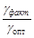 |
Предел прочности при сжатии R7, кГ/см2 |
Прочность контрольных образцов R7, кГ/см2 |
|
|||||||||
|
Начало |
Конец |
||||||||||||||||||
|
крупнее 25 |
25 - 2,5 |
2,5 - 0,071 |
менее 0,071 |
% |
кг |
||||||||||||||
|
км |
ПК |
+ |
км |
ПК |
+ |
|
|||||||||||||
|
1 |
2 |
3 |
4 |
5 |
6 |
7 |
8 |
9 |
10 |
11 |
12 |
13 |
14 |
15 |
16 |
17 |
18 |
19 |
|
|
|||||||||||||||||||
ВЕДОМОСТЬ
состава и физико-механических
свойств крупнообломочных и песчаных смесей при строительстве в условиях
пониженных положительных и отрицательных температур воздуха
|
Состав смеси, % проектный |
Содержание соли, % от веса оптимального количества воды (при зимнем строительстве) или содержание гумусовых веществ |
Объемный вес уплотненной смеси, кг/м2 |
Водопоглощение, % |
Предел прочности при сжатии, кГ/см2 |
Понижение прочности при сжатии после 25 циклов замораживания, % |
Состав смеси, рекомендуемой для строительства, кг/м3 |
||||||||||
|
Хранение 28 суток в воздушно-влажной среде |
Для работы при отрицательных температурах |
|||||||||||||||
|
Обломочный материал |
Цемент |
Соль (хлористый кальций или хлористый натрий) |
Вода |
При оптимальной влажности |
При пересчете на сухой скелет |
Выдерживается 28 суток в холодильной камере и хранение 28 суток в воздушно-влажной среде |
Хранение 56 суток в воздушно-влажной среде |
Выдерживание 28 суток в холодильной камере, хранение 28 дней в воздушно-влажной среде, 25 циклов замораживания и оттаивания |
Обломочный материал |
Цемент |
Вода |
Соли |
||||
|
1 |
2 |
3 |
4 |
5 |
6 |
7 |
8 |
9 |
10 |
11 |
12 |
13 |
14 |
15 |
16 |
17 |
ВЕДОМОСТЬ
физико-механических показателей
обломочных материалов, укрепленных цементом
|
№ пп |
Номинальный состав смеси по весу, Ц : Г : В |
Размер образца, мм |
Площадь образца S, см2 |
Объем образца V, см3 |
Вес образца в водонасыщенном состоянии, г |
Водопоглощение W, % веса |
Объемный вес материала, г/см3 |
Показание манометра, кГ/см2 |
Предел прочности, кГ/см2 |
|||
|
высота h |
ширина b |
длина 1 |
влажного g0 |
сухого g |
||||||||
|
1 |
2 |
3 |
4 |
5 |
6 |
7 |
8 |
9 |
10 |
11 |
12 |
13 |
ВЕДОМОСТЬ
испытания цементногрунтовых
образцов на модуль деформации или упругости
|
Номер образца |
Вид материала |
Время нагружения, ч-мин |
Нагрузка, кГ |
Показания индикаторов |
Среднее значение деформации |
Относительная деформация |
Модуль, кГ/см2 |
Коэффициент пластичности Еу/Е |
|||
|
1 |
2 |
полная |
обратимая (упругая) |
деформации Е |
упругости Еу |
||||||
|
1 |
2 |
3 |
4 |
5 |
6 |
7 |
8 |
9 |
10 |
11 |
12 |